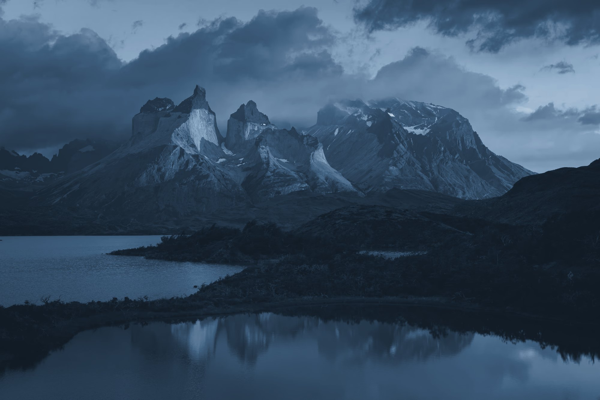
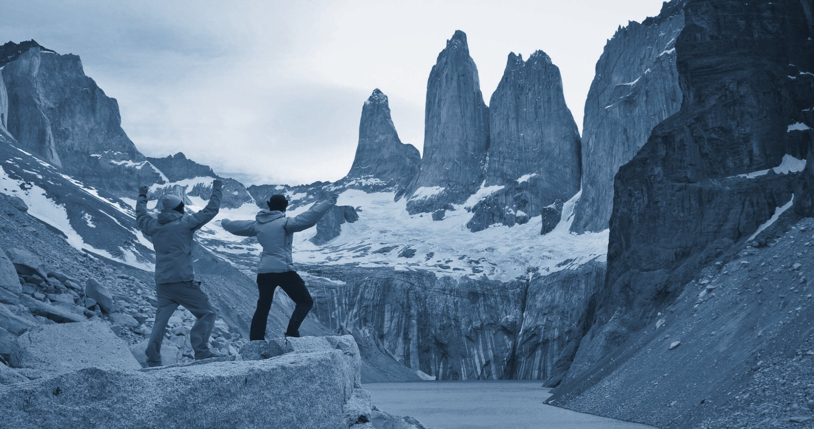
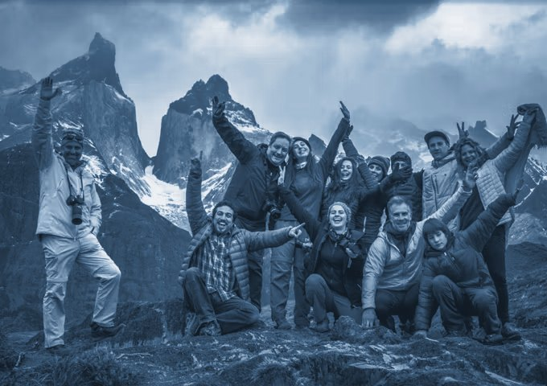
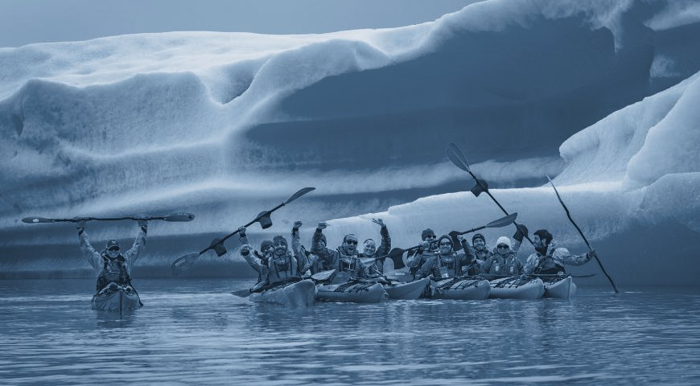
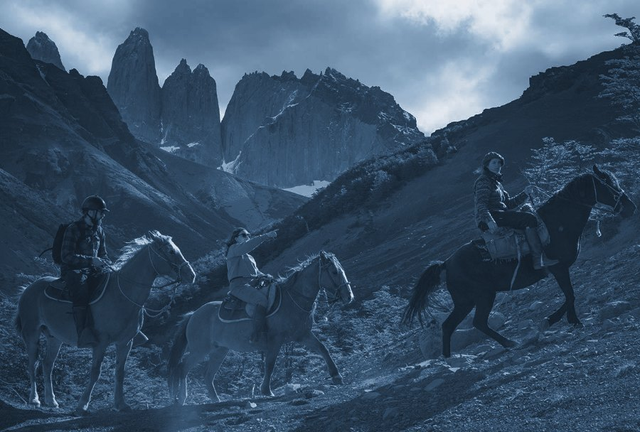
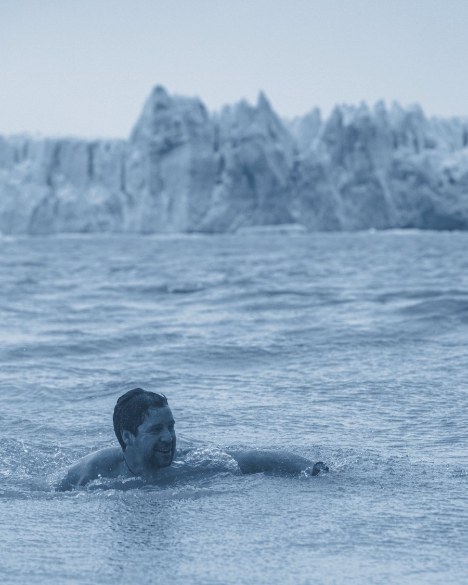
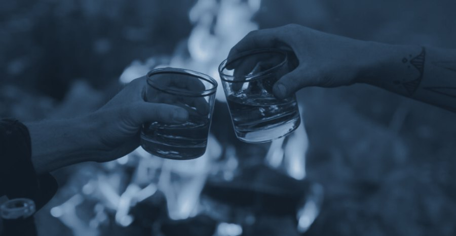
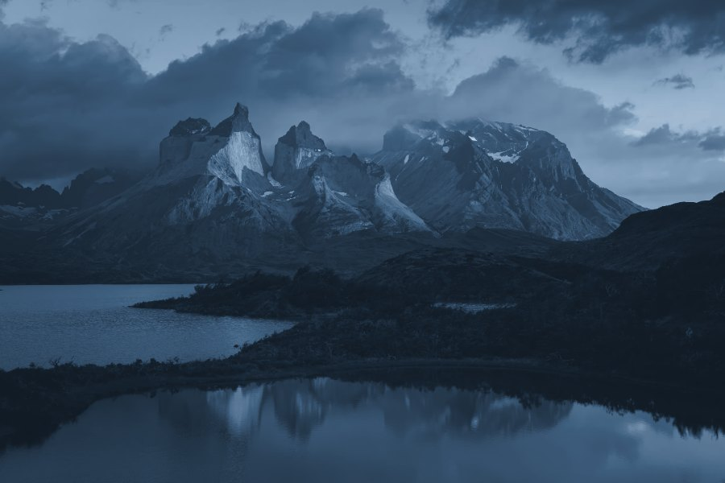
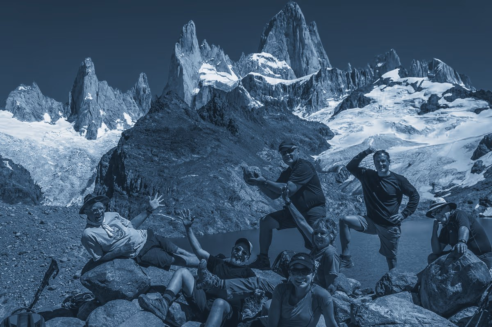
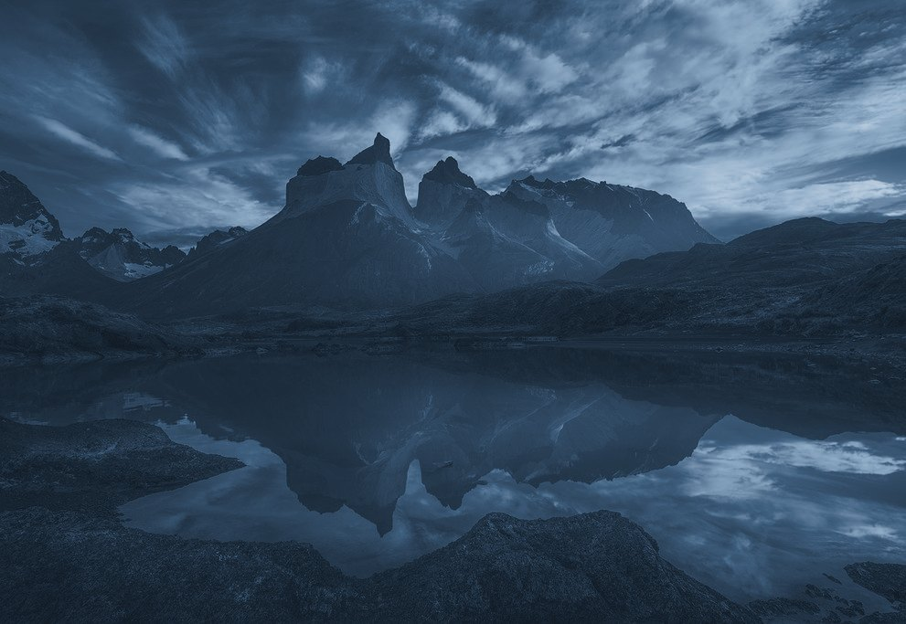

Small-group expeditions built around adventure, recovery and human connection.
No conference rooms.
No crowded itineraries.
No wellness production.
We go somewhere extraordinary.
We move. We explore. We recover.
We eat well. We disconnect.
We connect with people worth knowing.

Livewells Expeditions takes small groups into some of the world’s most extraordinary environments. Combining adventure, movement, recovery, food and human connection into experiences designed to stay with you long after you return.

For people who want to see what’s beyond the obvious.

Ready to step beyond what’s comfortable.

Drawn to places most people never reach.

Those who still have a wild side.

Friends, partners, teammates, or come solo and find yours.

No expedition résumé required.

Livewells is intentionally small.
Different backgrounds. Different stories. A shared willingness to step outside the familiar.
No forced networking. No name badges. No manufactured connection.
Just the strange thing that happens when good people do difficult, beautiful things together.
Livewells was born from a simple belief: some of the most meaningful moments in life happen when we leave comfort behind, move our bodies, enter extraordinary environments and share the experience with other people.
Livewells isn’t about escaping your life. It’s about returning to it differently.
Extraordinary places.
Exceptional guides.
Remarkable places to stay.
Incredible food.
Time away from noise.
And experiences money alone can’t manufacture.

Torres del Paine · Puma Tracking · Fjord Kayaking · Cerro Tenerife · Horseback with Gauchos · Sauna & Recovery · Glacier Plunges · Patagonian Asado · Whisky by the Fire · Celebrations Done Properly
It’s time to write your own story.
Go somewhere that stays with you.